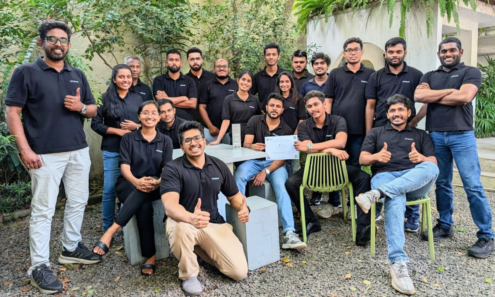
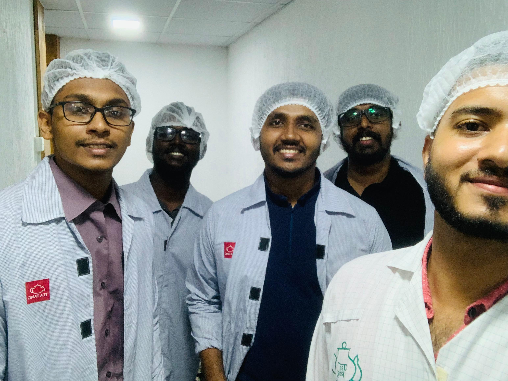
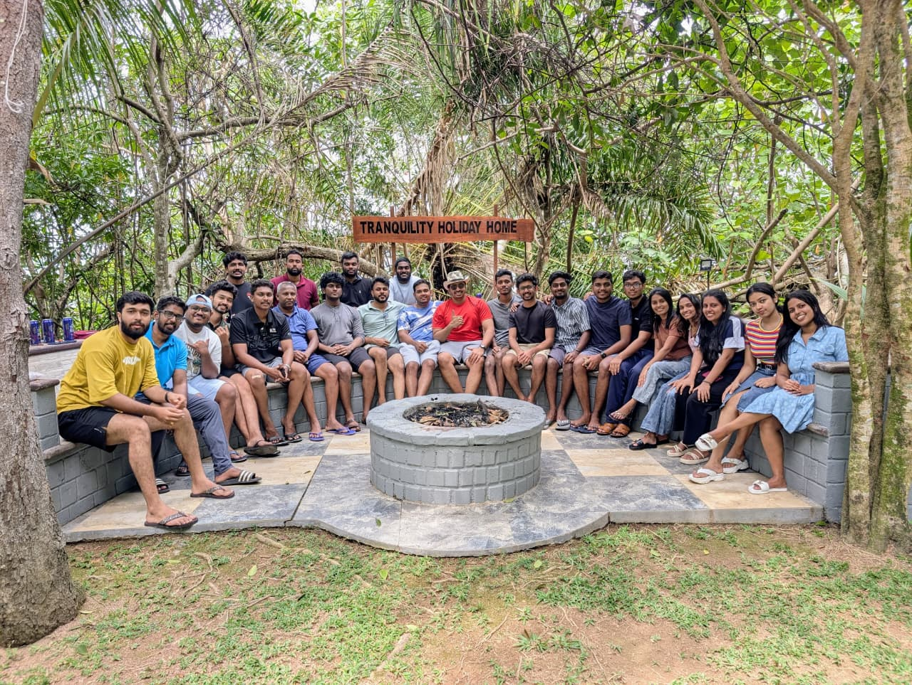
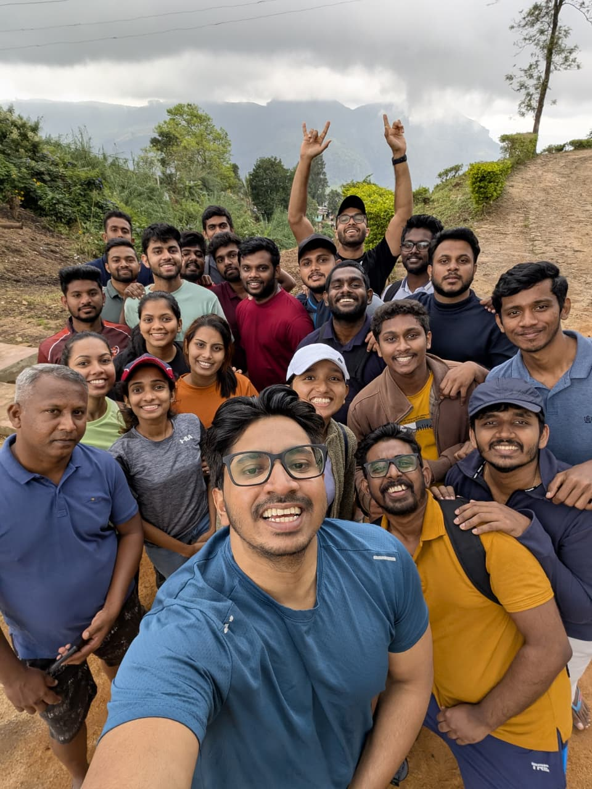
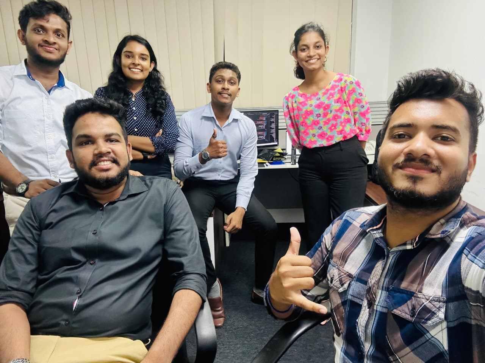
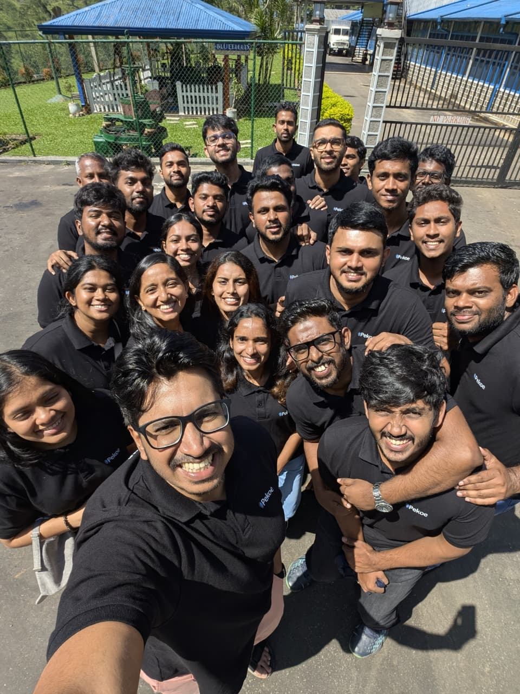
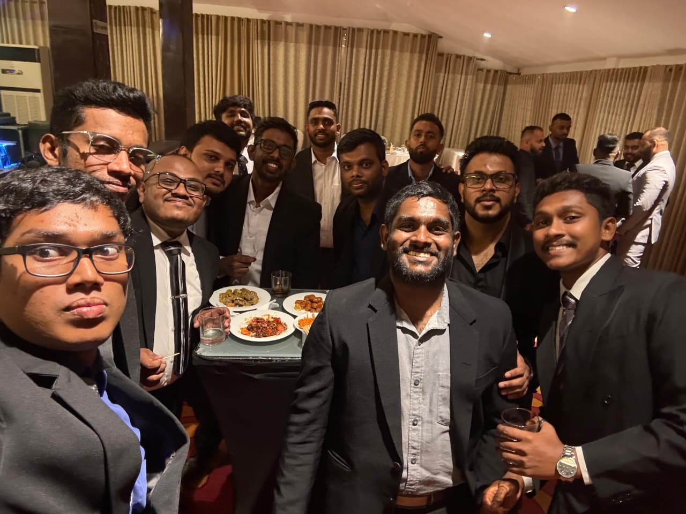
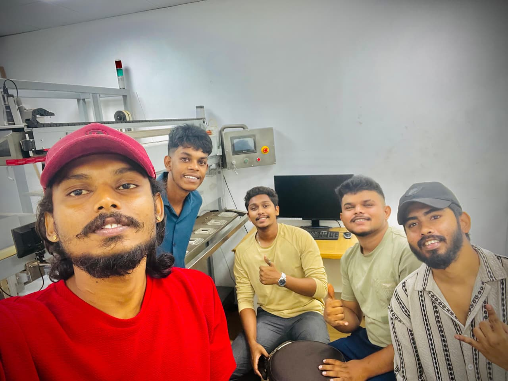
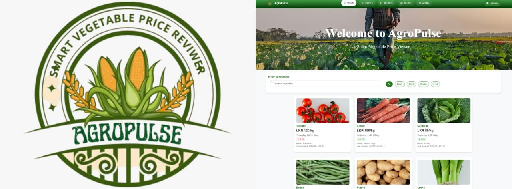

CHARITHA
WANIGASOORIYA
BT (HONS) IN INFORMATION & COMMUNICATION TECHNOLOGY UNDERGRADUATE AND OPERATIONS ASSISTANT-IT
Combining a deep technical foundation with hands-on operational execution
to build impactful solutions for real-world challenges.
"The best AI doesn't replace human understanding. It amplifies it."
Technical Arsenal
I am a second-year undergraduate at General Sir John Kotelawala Defence University, Sri Lanka, where I'm diving deep into Information and Communication Technology. My passion lies at the intersection of software engineering, network engineering, and intelligent database systems—basically, I love finding the sweet spot where smart code, data communication, and secure infrastructure meet real-world impact.
Simultaneously, I get to bring these concepts to life as a Part-time Operations Assistant at Pekoe.ai (Pvt) Ltd. Having scaled my role from a full-time trainee immediately after my days at Thurstan College, Colombo 07, I now spend my time coordinating technical operational setups and optimizing data workflows for agricultural AI applications.
My ultimate goal is building reliable, production-ready applications that translate complex machine learning into seamless, intuitive software solutions with a genuinely useful business impact.
WORKING
EXPERIENCE








Operations Assistant - IT
Pekoe (Pvt) Ltd
Trainee
Pekoe (Pvt) Ltd
FEATURED
PROJECTS

AgroPulse: Smart Vegetable Price Viewer
CREATIVE
EXPERTISE
A comprehensive skill set spanning web, mobile, and modern software development.
Web & Application Development
Crafting robust full-stack web architectures, object-oriented backends, and responsive user interfaces powered by structured relational databases.
Cyber Security & Network Engineering
Engineering secure network infrastructure, automated threat evaluation scripts, and data-driven security workflows to protect critical systems.
"First, solve the problem. Then, write the code."— John Johnson —
EDUCATION
BACKGROUND
General Sir John Kotelawala Defence University
Bachelor of Technology (Hons.)
- Information & Communication Technology
Thurstan College
GCE Advanced Level
- Physical Science Stream
Thurstan College
GCE Ordinary Level
Sir John Kothalawala Maha Vidyalaya
Grade 5 Scholarship
AWARDS &
SCHOLARSHIPS
Vice Chancellor’s List – Year I
Earned Vice Chancellor’s List honors for outstanding academic excellence during the first year of the BTech (Hons) in ICT program, achieving a 3.9121 YGPA.
VOLUNTEERING &
LEADERSHIP
Vice President
2026 – Present
Director of Community Services
2025 – 2026
Avenue Member
2024 – 2025
Currently leading and managing some of our biggest projects, like Wassane 360° (a massive outdoor 360° concert), Project Alimankada and Project Kruthaguna. I’ve also co-chaired key events like Rise Beyond, KDU Manusath Mehewara flood relief project, Gamata Kreeda and KDU Super 10's, while putting my full effort into volunteering for many other community initiatives.
Project Chair
2026 – Present
Member
2025 – 2026
Leading and directing the Membership Task Force as the Program Team Lead, while also supporting the HerVision project as a core team member. Beyond these roles, I actively volunteer and help out with major events like IEEE Day, Step into Industry and Navigator to support student growth and career development.
Department Coordinator - ICT
2025 – Present
Co-chairing and organizing our biggest event of the year, the Hackathon and Business Idea Competition. Alongside this main role, I have actively helped run past events, including practical UI/UX design workshops and technology awareness sessions like Tech Drive and Tech talk for students.
Assistant Secretary
2025 – Present
Successfully co-organized IGNITE '25, a massive indoor talent showcase and community-building event featuring student performances, cultural segments, and live entertainment.
Applause Corner
"Charitha has been a valuable asset to the team, consistently demonstrating a strong work ethic and proactive approach to his responsibilities. He works hard, takes ownership of tasks and solves the problems that arise while completing them. His contributions to our operations have been significant and I highly recommend him."
LET'S CREATE
TOGETHER
Ready to collaborate on innovative projects in web development, networking, or AI? Let's connect.